lzx的秘密基地记录一路上看到的、吃到的、想到的 |
|
| 首页 关于我 相册 爱好 音乐 写信给我 | |
|
听歌去 点任意一张封面 |
我喜欢的音乐最近在循环的一些专辑，点开封面就能直接去听。 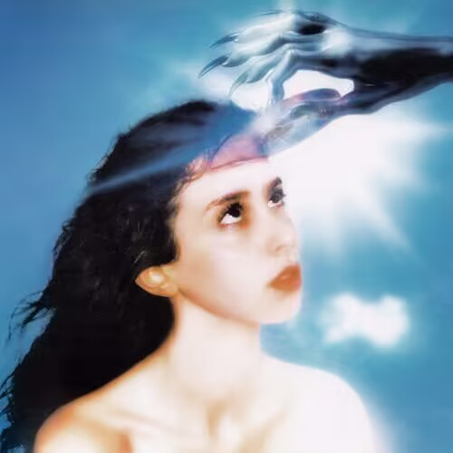 ▶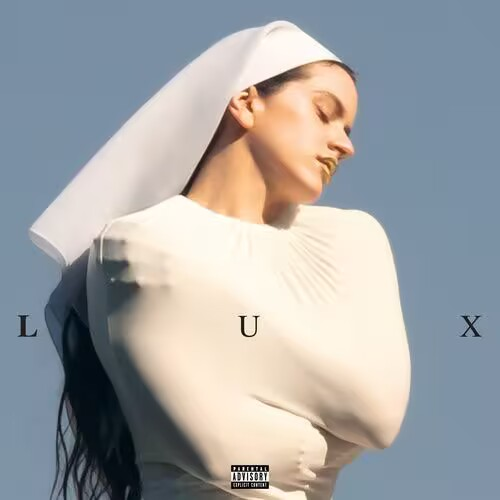 ▶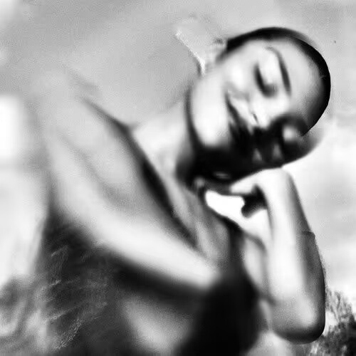 ▶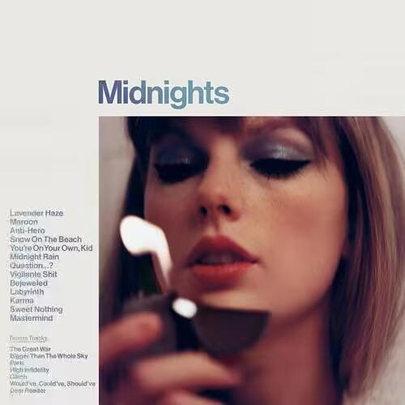 ▶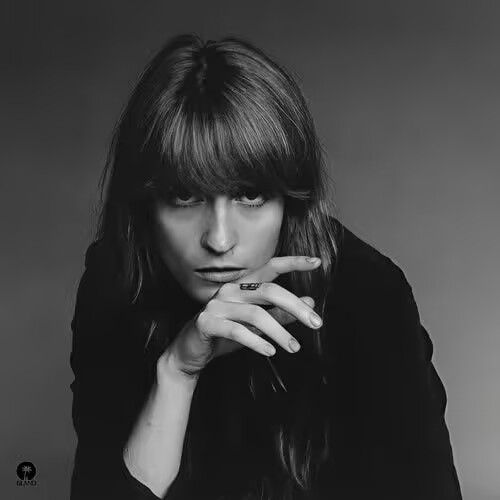 ▶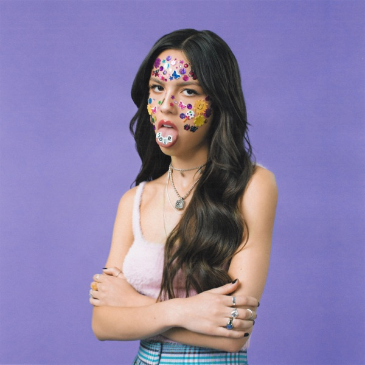 ▶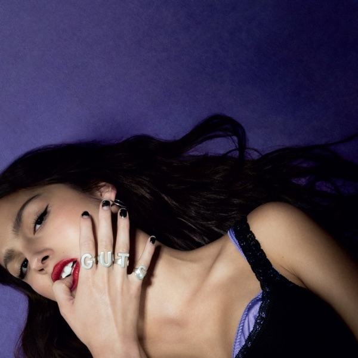 ▶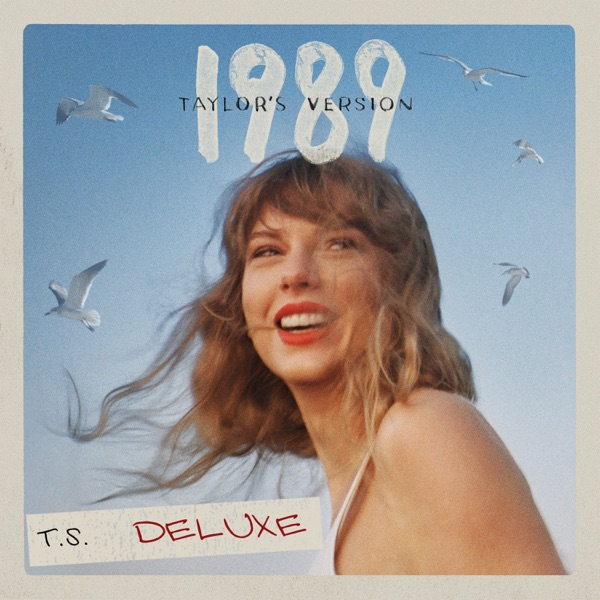 ▶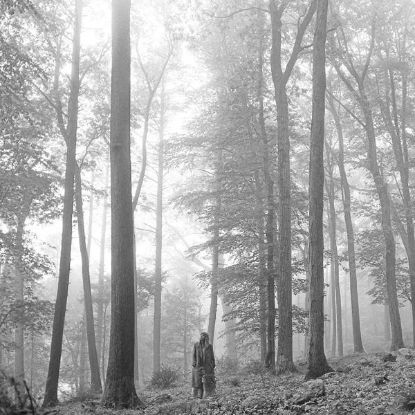 ▶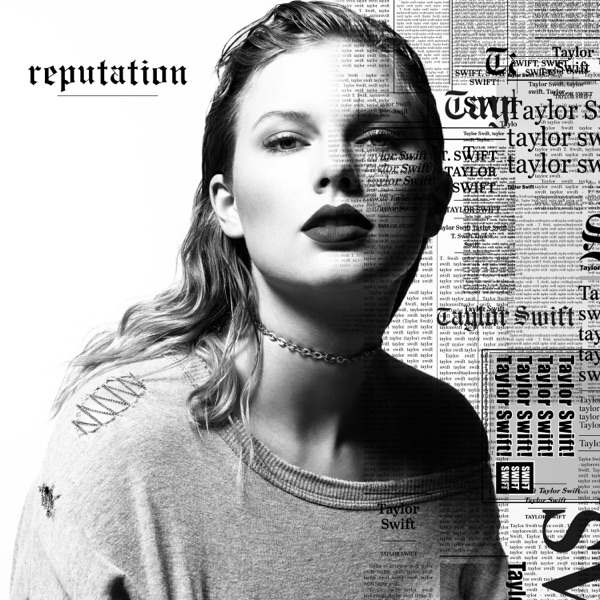 ▶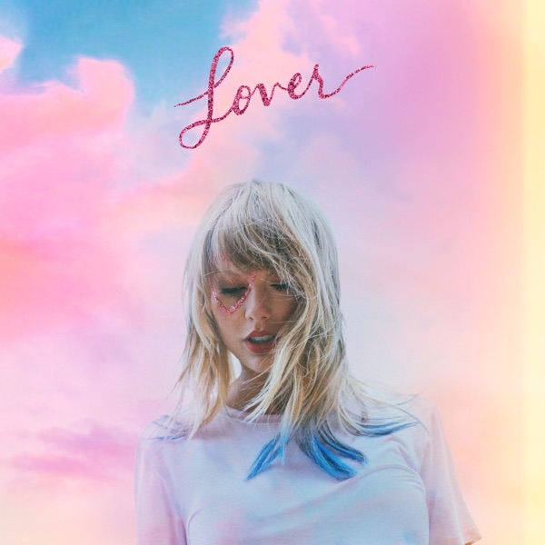 ▶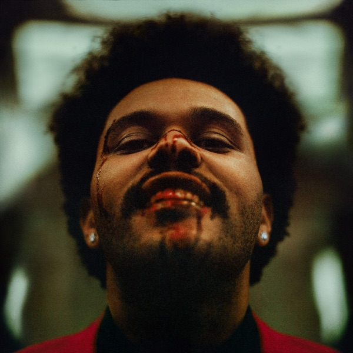 ▶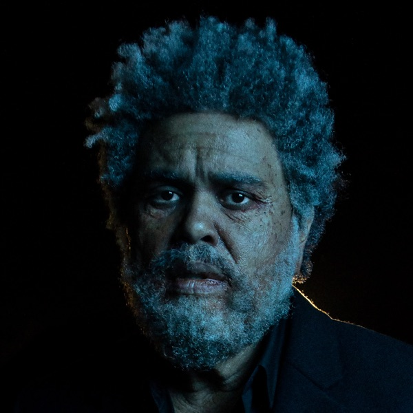 ▶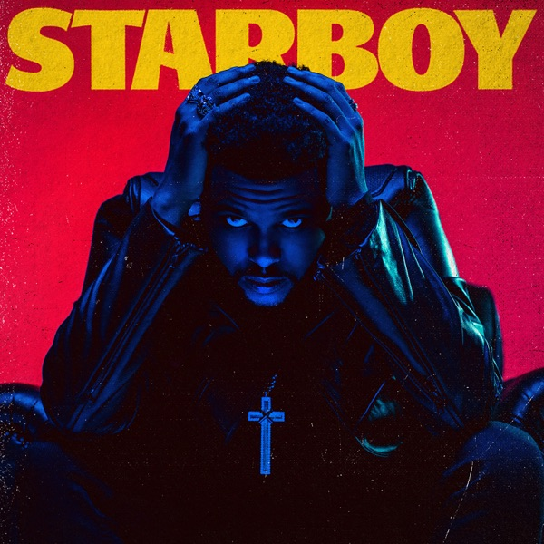 ▶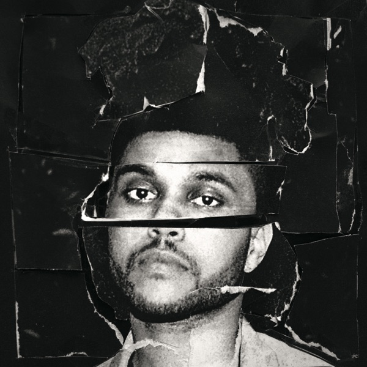 ▶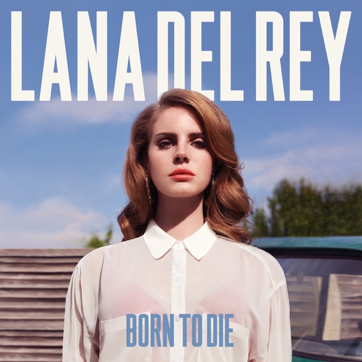 ▶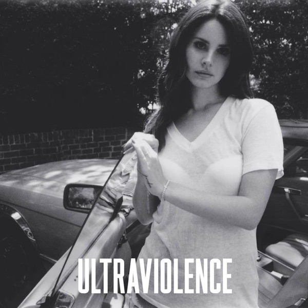 ▶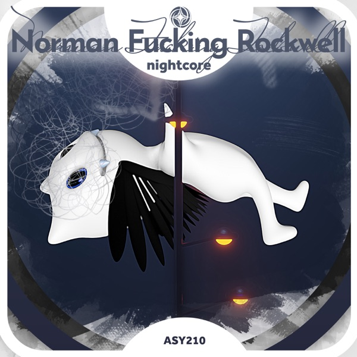 ▶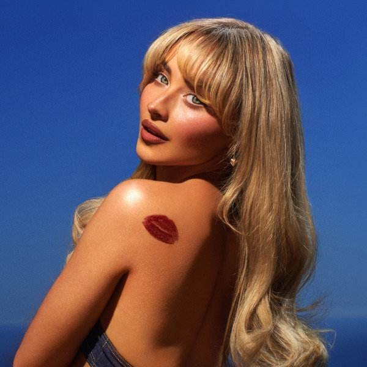 ▶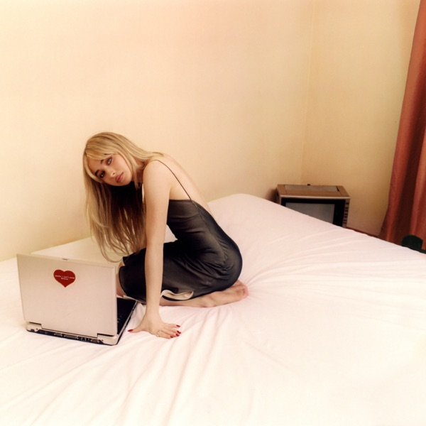 ▶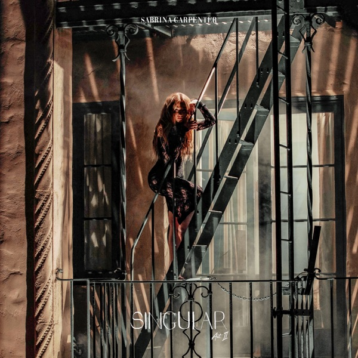 ▶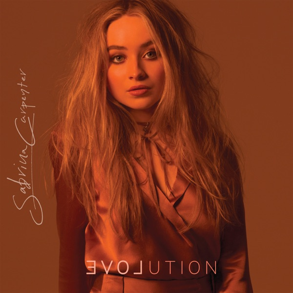 ▶封面版权归各唱片公司所有，这里只用来介绍专辑。 |
| 今天是 2026 年 11 月 22 日 | lzx的秘密基地 | 您是第 1 位访客 | |